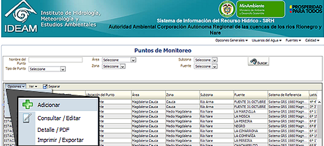
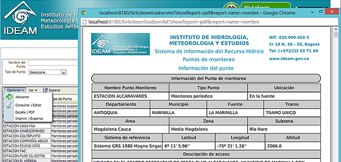

Una vez ha realizada la identificación de las fuentes hídricas de su jurisdicción, usted podrá registrar los Puntos de monitoreo que su entidad ha definido para monitorear las condiciones de calidad de una fuente abastecedora. Observe que en la parte superior se muestran los criterios de búsqueda para ubicar los puntos por Nro. identificación, nombre del punto, tipo punto o subzona hidrográfica, de modo que pueda ingresar los parámetros que considere necesarios para ubicar su punto de monitoreo y hacer clic en el botón Buscar .
Para crear un nuevo Punto de monitoreo, de clic en el menú "Calidad" y despliegue el menú secundario "Opciones" para "Adicionar" un nuevo punto.

Si desea ver la información de un Punto ya registrado, de clic sobre el renglón del Punto de su interés, despliegue el menú secundario "Opciones" y de clic en "Consultar / Editar".
Si desea descargar la información de un punto específico, de cli c en la opción "Detalle / PDF", el sistema construirá para su descarga un documetno PDF con toda la información del punto, incluyendo los valores de todas las mediciones registradas:
